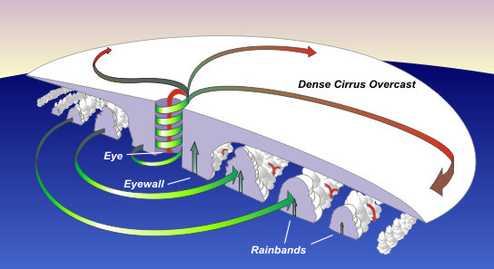

Natural Disasters: Hurricanes
Human Health & the Environment
Welcome & framing
Hurricanes, Katrina & Health
Ecosystems ↔︎ infrastructure ↔︎ people
Set the session arc: 1) hurricane physics vs. impacts, 2) Katrina as environmental justice case, 3) health systems & preparedness, 4) designing better risk communication than “category only”.
What a hurricane is (and isn’t)
Warm-core, low-pressure tropical cyclones with organized rotation

Podcast: “warm core” due to latent heat release; strongest winds near surface. Frame risk as Hazard × Exposure × Vulnerability.
Weakening ≠ safe
A weakening hurricane can expand → bigger wind/surge footprint
Public messaging risk: people anchor to the number, not the footprint. Previews Katrina dynamics at landfall.
Rapid Intensification (RI)
- More frequent near landfall
- Compressed decision windows for evacuation & hospitals
Prompt: If you run a coastal hospital, which actions move from T-48h to T-72h under higher RI risk? (Dialysis scheduling, O2 logistics, early discharges, staff lodging.)
Image: anatomy of a cyclone

Narrate inflow/outflow, eyewall, rainbands, and where hazards concentrate relative to track.
Case study: Hurricane Katrina (2005)
Stress that many deaths were from post-landfall flooding, not peak winds. Infrastructure failure + social vulnerability → health catastrophe.
Katrina & environmental justice

Connect to previous class: how historical housing policy maps onto present-day disaster risk and health inequities.
Public health cascades
Acute: drowning, trauma, CO poisoning
Subacute: waterborne disease, mold, asthma
Chronic: PTSD/depression, DV rise, displacement
Introduce disaster epidemiology terms (excess mortality, indirect deaths, syndemics). Ask: What surveillance would you deploy at 1 week / 1 month?
Evacuation paradox: Hurricane Rita (2005)
Mass evacuation → heat, dehydration, traffic mortality
Rita saw >2.5M evacuees; >50% of deaths occurred during evacuation. Discussion: When is shelter-in-place safer, and how do we message that?
Katrina lessons for today
- Category ≠ consequence
- Community capacity drives mortality trajectory
- Mitigation is equity-positive public health policy
Bridge to ROI and planning: “Mitigation Saves” (~$6 per $1). Ask which two investments (grey/green or social) they’d prioritize now for NOLA.
Preparedness across scales
Household ↔︎ neighborhood ↔︎ clinic/hospital ↔︎ city
We’ll ladder through: home kits & meds, neighbor check-ins, clinic surge, municipal transit/shelter ops. Assign a brief preparedness plan later.
Household & neighborhood
- Redundant alerts; meds & docs ready
- Know your floodplain / drainage
- Pets, caregivers, carpool networks, mutual aid
Quick activity: sketch a neighbor check-in grid (names, needs, contact, “last seen”).
Clinics & hospitals
- Pre-position oxygen/dialysis/insulin; backup power
- On-site staff lodging & childcare
- Early discharges; telehealth triage
- Post-storm: heat, mold, vector control
Mini-scenario: A Cat 2 is forecast to RI to Cat 4 in 24–36h. What activates at T-36h, T-12h, and +48h?
Community & policy levers
- Cool roofs, raised utilities, permeable streets
- Surge barriers, wetland restoration, buyouts
- Transit-enabled evacuation
- Fund local EM; measure outcomes
Highlight co-benefits (air quality, heat). Note who benefits first if budgets are tight; link to equity.
Video: policy or health case
(Paste a short YouTube explainer; adjust for autoplay per your policy.)
Prompt: list three “no-regret” investments with health benefits even absent a storm next year.
Designing better risk metrics
Beyond category: surge, rainfall, footprint, RI risk
Exposure: population, assets, hospitals
Vulnerability: SVI, car access, language, disability
Group task (5–6 min): Propose a 4-component index for your chosen coastal city. One team shares out.